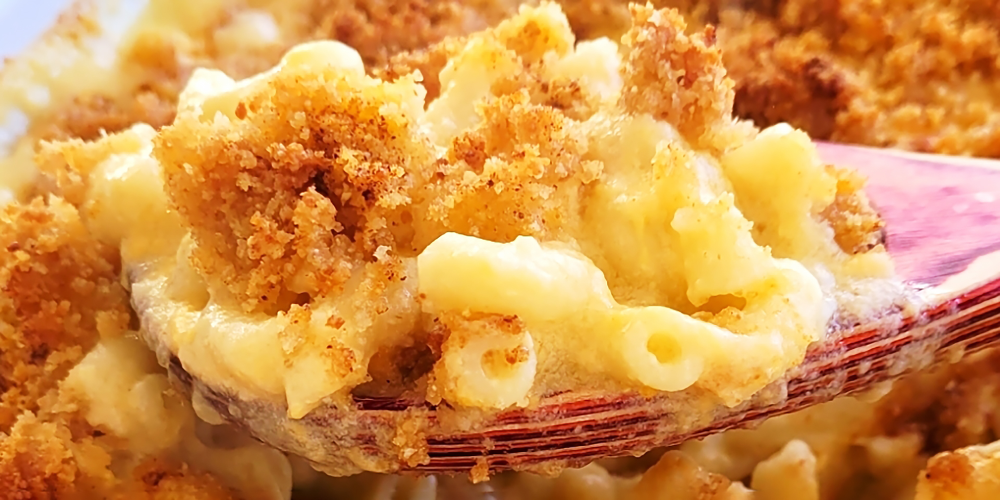

Mac and Cheese

Description
Mac and Cheese is a well known dish that is made from macaroni paste and
cheese sauce, most of the time cheddar. This is a dish that can be
complemented with a variety of different dishes and is enjoyed worldwide.
Ingredients
- 8 ounches uncooked elbow macaroni
- 1/4 cup butter
- 2 1/2 tablespoons all-purpose flour
- 3 cups milk
- 2 cups shredded sharp Cheddar cheese
- 1/2 cup grated Parmesan cheese
- 2 tablespoons butter
- 1/2 cup bread crumbs
- 1 pinch paprika
Steps
- Preheat the oven to 350 degrees F (175 degrees C).
- Cook macaroni according to the package directions. Drain.
-
Melt butter in a medium skillet over low heat. Gradually add flour,
whisking until well combined. Slowly pour in milk, whisking constantly
until smooth. Stir in cheeses, and cook over low heat until cheese is
melted and the sauce is a little thick. Put macaroni in large casserole
dish, and pour sauce over macaroni. Stir well.
-
Melt butter in a skillet over medium heat. Add breadcrumbs and brown.
Spread over the macaroni and cheese to cover. Sprinkle with a little
paprika.
- Bake in the preheated oven for 30 minutes. Serve.
Home